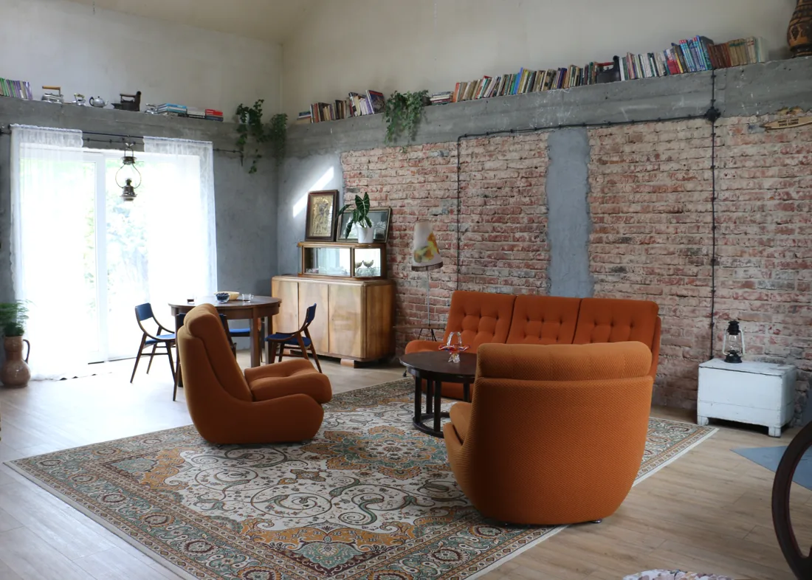
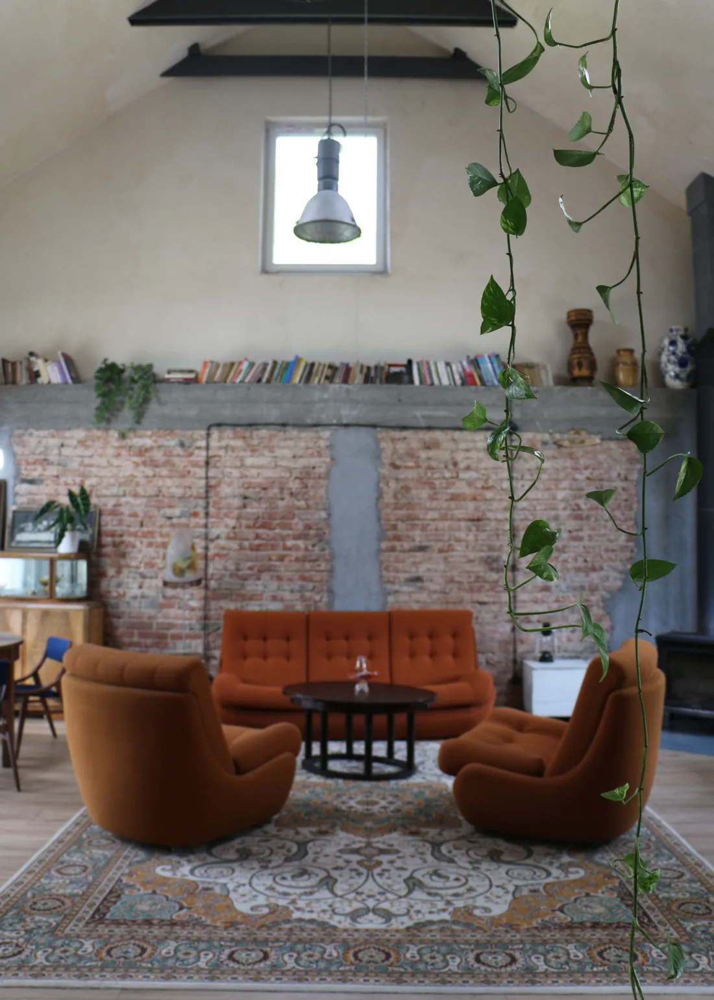

DOM DO WYNAJĘCIA
Dom z historią.
Czas dla siebie.
Goślice 15 to także dom z 1937 roku. Ze starymi meblami, kominkiem i miejscem dla ośmiu osób.

8 osóbna nocleg
4 podwójne łóżkadla spokojnego snu
Ogród i tarasna czas poza domem

NA KILKA DNI LUB PRZY OKAZJI PRZYJĘCIA
Rozgość się.
Możesz wynająć dom razem z przyjęciem w stodole lub całkiem osobno. To miejsce na pobyt z bliskimi, małe spotkanie albo odpoczynek po uroczystości.
W środku są stare meble, cegła i przedmioty zbierane przez lata. Na zewnątrz: taras, ogród, mały sad i grill.
Zapytaj o pobyt


INNA PERSPEKTYWA
Także przed
obiektywem.
Dom i stodołę udostępniamy również na sesje zdjęciowe oraz nagrania. Jeśli szukasz wnętrza ze starą cegłą i oryginalnymi meblami, porozmawiajmy o terminie i pomyśle.
Zapytaj o sesjęDOBRZE WIEDZIEĆ
Zanim się
spotkamy.
Ile osób może nocować w domu?
Dom jest przygotowany na osiem osób. Są w nim cztery podwójne łóżka.
Czy wynajem domu wymaga rezerwacji stodoły?
Nie. Dom można wynająć oddzielnie. Napisz, jaki termin i rodzaj pobytu planujesz.
Czy można zorganizować w domu spotkanie?
Tak, w domu mogą odbywać się spotkania do 20 osób. Szczegóły i dostępność ustalamy wcześniej.
ZAPRASZAMY DO GOŚLIC
Wpadnij na chwilę.
Zostań na dłużej.
Napisz, kiedy chcesz przyjechać i ile osób będzie z tobą.
Umów obejrzenie miejsca